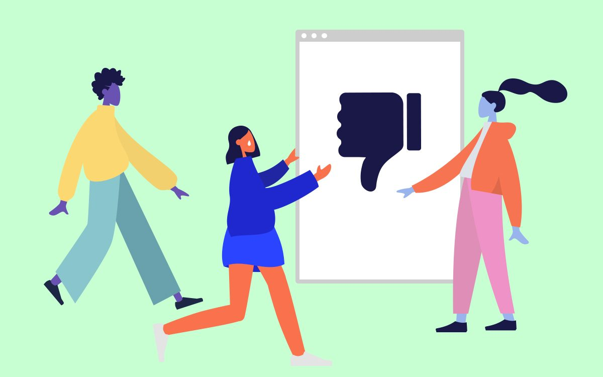

References / Editorial / 212
Illustration for “Don’t Worry, These Gangly-armed Cartoons…” (Katharina Brenner)
The hero image of AIGA Eye on Design’s 2019 article on the style: three flat figures with blue, violet, and orange skin reaching toward a browser window with a thumbs-down.
- Source
- AIGA Eye on Design, 21 August 2019
- Creator
- Katharina Brenner, with figures by Pablo Stanley (Humaaans)
- Made
- 2019
- Style
- Corporate Memphis (agent-proposed, not yet reviewed by a person)
- Moods
- Friendly, ironic, bright
- Evidence
- Inspected the 1200 × 750 original (
Alegria_Hero-1.jpg) from the AIGA article and stored it. The same image is on Wikimedia Commons.png), where the Wikipedia article uses it. - Reviewed
- Rights
- Open license, stored. License: CC-BY-4.0. Rights policy
Context
The AIGA caption reads: “Image by Katharina Brenner. Illustrations are licensed under a Creative Commons Attribution 4.0 International license. Illustrations by Pablo Stanley, via humaaans design library. All illustrations have been edited.” AIGA Eye on Design.
The image is built from Humaaans figures; the article itself is about Facebook’s Alegria and its imitators.
Observed
- The background is a flat mint green. A white browser window with a grey frame and three dots stands in the centre and shows a large navy thumbs-down.
- A figure with violet skin walks in from the left in a yellow sweater and pale teal trousers, with long arms that end in small pointed hands.
- A figure with orange skin in a blue top lunges toward the window with both arms raised; a single white tear marks the face.
- A figure with pale blue skin and a long navy ponytail stands on the right in an orange jacket and pink trousers, one arm stretched out.
- All shapes are flat fills without outlines; each garment has one darker tone for the far side.
Why it belongs
The image uses the style to comment on it: the cheerful figures react to a thumbs-down, the reverse of Alegria’s thumbs-up.
Borrow
Put one interface object, such as a browser window, in the centre and let the figures react to it from both sides.
Use a single pale background color instead of white to hold several bright skin and clothing colors together.
Measured
Machine-extracted by tools/image-traits.py on . Full measurement.
- Mean chroma
- 0.22
- Palette
- #c7ffd2 64%
- #ffffff 13%
- #1a1847 3%
- #f7724f 3%
- #e791bf 2%
- #f8d671 2%
- #8cc2d1 2%
- #1f28ce 2%

